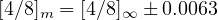
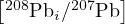
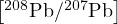

Carbonate U–Pb dating has become a key tool for Quaternary palaeoclimatology and palaeoanthropology beyond the age limit of Th–U disequilibrium dating. U–Pb geochronology is based on the paired radioactive decay of 238U to 206Pb and of 235U to 207Pb. Current carbonate U–Pb data processing algorithms rely mostly on the 206Pb/238U clock and attach little weight to the 207Pb/235U data. A key weakness of this approach is the need to correct the 206Pb/238U data for initial 234U/238U disequilibrium, which may cause an excess or (occasionally) a deficit in radiogenic 206Pb compared to secular equilibrium. Uncorrected initial disequilibrium may bias 206Pb/238U dates by up to 4 Myr. We introduce a new disequilibrium correction algorithm, using matrix exponentials. This algorithm can be used to undo the effects of U-series disequilibrium using either an assumed initial composition, or a measured set of modern 234U/238U (and optionally 230Th/238U) activity ratios. Using a deterministic Bayesian inversion algorithm, we show that disequilibrium corrections work well for relatively young samples but become unreliable beyond 1.5 Ma and impossible beyond 2 Ma. Using theoretical models and real world examples from Siberia, South Africa and Israel, we show that the uncertainty of the disequilibrium correction of such old samples exceeds the correction itself. Previous ‘Monte Carlo’ error propagation methods underestimate these uncertainties by up to an order of magnitude. For carbonates older than 2 Ma that likely experienced significant initial 234U/238U disequilibrium, we recommend using the 207Pb/235U isochron method instead of 206Pb/238U geochronology. 207Pb/235U isochrons require only a small and simple correction for initial 231Pa depletion. This makes 207Pb/235U dating more accurate than 206Pb/238U geochronology. However, the 207Pb/235U method is no panacea. Its precision is limited by the lower abundance of 207Pb compared to 206Pb. In some samples, this loss of precision results in a failure to outperform the Bayesian credible intervals of the disequilibrium-corrected 206Pb/238U dates. Such samples remain undateable, unless prior information is available to constrain the initial 234U/238U activity ratios.
Carbonate rocks are only a minor component of the continental crust. However, their scientific importance far outweighs their volumetric abundance. Biogenic carbonates and speleothems document the history of life, and of Earth’s climate and environment. To generate detailed time series of past changes from these carbonate archives, an accurate and precise chronological framework is essential. This framework is anchored in absolute time using radiometric dating methods, with two techniques commonly employed for this purpose. 230Th/U dating is the method of choice for young samples whose 230Th, 234U and 238U activities are out of secular equilibrium (Kaufman and Broecker, 1965; Ludwig, 2003). 206Pb/238U dating is the default method for older rocks, in which the secular equilibrium between 230Th, 234U and 238U has been restored (Smith and Farquhar, 1989; Roberts et al., 2020).
Ironically, the absence of detectable 234U/238U disequilibrium compromises the accuracy of the 206Pb/238U method. Any initial excess or deficit of 234U and 230Th affects the 206Pb/238U ratio and, hence, the age estimate derived therefrom. In clean, detritus-free carbonates, it is often safe to assume the absence of initial 230Th. This assumption is not valid for 234U, which can be enriched (or occasionally depleted) relative to 238U by physiochemical processes such as (1) α-recoil ejection and preferential leaching of 234U from α-damaged mineral sites, and (2) chemical fractionation between preferentially oxidised 234U6+ and 238U4+ (Fleischer, 1982; Porcelli and Swarzenski, 2003).
Corrections for initial 234U/238U disequilibrium can be done by either assuming a specific initial 234U/238U activity ratio, or by inferring the initial ratio from any measured residual 234U/238U-disequilibrium (Richards et al., 1998; Woodhead et al., 2006; Wendt and Carl, 1985; Engel et al., 2019). In Section 2 of this paper, we review the second approach using matrix exponentials. We show that initial 234U/238U disequilibrium can bias 206Pb/238U dates by up to 4 Myr.
Current disequilibrium correction algorithms use a ‘Monte Carlo’ approach to propagate the errors. In Section 3 we will show that this approach can underestimate the analytical uncertainties of 206Pb/238U dates by an order of magnitude when samples are within a few permil of secular equilibrium (which typically happens before c. 2 Ma). This observation undermines the results of several published studies (Vermeesch et al., 2025).
In Section 4 we introduce a deterministic Bayesian approach to estimate the uncertainties of disequilibrium-corrected 206Pb/238U dates. We use this alternative algorithm to show that beyond c. 2 Ma, disequilibrium-corrected 206Pb/238U dates are impractically imprecise, unless highly enriched initial 234U/238U activity ratios can be ruled out a priori. The large uncertainty associated with the 206Pb/238U method degrades its ability to constrain reliable chronologies for carbonates whose initial disequibrium has expired. However, a more accurate approach is available. Following the example of Richards et al. (1998), Neymark and Amelin (2008), Vaks et al. (2020) and others, Section 6 makes a case for the little-used 207Pb/235U clock as a replacement for the 206Pb/238U method.
207Pb/235U isochrons are, essentially, immune to the effects of initial disequilibrium (apart from a minor correction for 231Pa, which becomes smaller with increasing age). In Section 7 we present examples from Siberia and Israel to show that the 207Pb/235U method is more accurate than the 206Pb/238U method, whilst being less precise for young samples. Both the Bayesian uncertainty estimation method and 207Pb/235U isochrons have been implemented in the IsoplotR toolbox for radiometric geochronology (Section 8).
This paper will use the following symbols and notations:
n38, n34, n30, n26 and n06: the number of atoms of 238U, 234U, 230Th, 226Ra and 206Pb, respectively;
λ38, λ35, λ34, λ32, λ31 λ30 and λ26: the radioactive decay constants of 238U, 235U, 234U, 232Th, 231Pa, 230Th and 226Ra, respectively;
[4∕8]t: the present day 234U/238U activity ratio (i.e. [λ34 n34]∕[λ38 n38]);
[4∕8]i, [0∕8]i, [1∕5]i: the initial 234U/238U, 230Th/238U and 231Pa/235U activity ratios, respectively;
[4∕8]m and s[4∕8]m: the measured 234U/238U activity ratio and its standard error, respectively.
123.456 ± 0.012 represents a(n approximate) 95% confidence interval; whereas 123.456(78) is a more succinct notation that indicates a value of 123.456 with a standard error of 0.078.
Even though the U–Pb decay systems consist of numerous steps (14 for the 238U→206Pb chain and 11 for the 235U→207Pb chain), conventional U–Pb geochronology ignores this complexity and the method is mathematically treated as a set of simple parent-daughter pairs. This simplification is justified once a state of secular equilibrium is established between all the intermediate daughter products in the decay chains. Such secular equilibrium is practically reached after 1 to 2 million years. As mentioned in Section 1, any disequilibrium that might exist prior to this secular equilibrium can be used as a chronometer in its own right.
Initial disequilibrium of the U-decay series affects the accuracy of the U–Pb method. For example, ignoring any initial excess 234U results in an overestimated 206Pb/238U age, and ignoring any initial 231Pa deficit results in an underestimated 207Pb/235U age. Therefore, initial disequilibrium is one mechanism to produce discordant U–Pb results. Extreme 234U-enrichments have been observed in places such as South Africa ([4∕8]i < 12; Kronfeld et al., 1994), Siberia ([4∕8]i < 6; Vaks et al., 2020) and Japan ([4∕8]i < 12; Kuribayashi et al., 2025). Using the [4∕8]i = 12 value as an upper bound, the maximum effect of initial 234U/238U-disequilibrium can be approximated as follows:
| (1) |
where λ38 = 0.155125(83),Gyr-1 (Jaffey et al., 1971), λ30 = 9.1705(16)Myr-1 and λ34 = 2.82206(80)Myr-1 (Cheng et al., 2013). For old carbonates (> 100 Ma, say), a 4 Myr bias may be inconsequential. However, for young carbonates, the relative effect of initial disequilibrium can result in order-of-magnitude levels of bias. A disequilibrium correction is needed to remove this bias.
If the intermediate daughter is sufficiently long lived and the sample is sufficiently young (t < 5∕λ, say) to retain some of its disequilibrium, then the activity ratios can be back-calculated to the time of isotopic closure (assuming subsequent closed-system behaviour). This strategy applies to 234U/238U-disequilibrium and, for very young samples, to 230Th/238U-disequilibrium. The complex evolution of the U-decay series was first described by Bateman (1908) and subsequently applied to U–Pb geochronology by Ludwig (1977), Wendt and Carl (1985) and Engel et al. (2019). Here we opt for an alternative formulation, using matrix exponentials (Albarède, 1995). For example, the 238U→206Pb decay chain can be expressed in matrix form as follows:
| (2) |
where λ26 = 0.4332(19)kyr-1 (Audi et al., 2003), and the shortest lived intermediate daughters (< 1 kyr half lives) have been omitted. The solution to Equation 2 is a so-called matrix exponential:
| (3) |
which expresses the present day amounts of the different isotopes as a function of the initial amounts. An interesting result is obtained by setting t = ∞ in Equation 3 to estimate the activity ratio under secular equilibrium:
| (4) |
Note that this activity ratio is not exactly equal to unity. This is because 0.0055% of 238U is lost during 234U’s mean lifetime of 1∕λ34 = 354kyr. Equation 3 can also be inverted to express the initial amounts as a function of the present day amounts:
| (5) |
Equations 3 and 5 can be used to construct a concordia diagram in the presence of disequilibrium. If measured activity ratios are used to infer the initial conditions, then the concordia line terminates where those inferred activity ratios reach unrealistic values (e.g., [4∕8]i = 500 and [0∕8]i = 0; Figure 1a). Beyond ten or so 234U half lives, it becomes very difficult to estimate [4∕8]i from [4∕8]m, and it is even more difficult to quantify the analytical uncertainty of the disequilibrium correction. In Section 3 we review the current ‘Monte Carlo’ approach to uncertainty estimation for initial disequilibrium correction and in Section 4 we propose an alternative ‘Bayesian’ approach, which offers significant advantages for samples that are close to secular equilibrium.
Existing data processing software for disequilibrium-corrected 206Pb/238U geochronology, such as DQPB (Pollard et al., 2023), estimate the uncertainty of the disequilibrium correction by Monte Carlo simulation. Given a linear array of isotopic data in Tera-Wasserburg space (i.e. n07∕n06 vs. n38∕n06), paired with an activity ratio measurement [4∕8]m with standard error s[4∕8]m, this approach works as follows:
Draw a random value [4∕8]t from a normal distribution with mean [4∕8]m and standard deviation s[4∕8]m.
Fit a straight line to the U–Pb data and find the [4∕8]i-value and isochron age (t) that are consistent with both the U–Pb measurements and [4∕8]t. In other words, use Equation 5 to estimate [4∕8]i from [4∕8]t and repeat this for different values of t until the linear fit to the U–Pb data is optimised.
Repeat steps 1 and 2 until the entire distribution of [4∕8]t-values has been sampled.
If step 2 fails or produces physically impossible results (e.g., t < 0), then ignore the corresponding [4∕8]t-value. Otherwise add the [4∕8]i and t-values to a list of acceptable results.
Use the spread of the acceptable [4∕8]i and t-values to quantify their respective uncertainties.
For the purpose of the present study, we have implemented our own version of this algorithm, using R and IsoplotR (Vermeesch, 2018). The only major difference between our code and DQPB is that it does not sample the [4∕8]m-distribution randomly, but uses a targeted approach to sample [4∕8]m as a sequence of regularly spaced normal quantiles. This is faster and produces deterministic results that do not depend on the seed of a random number generator. Figure 1 summarises the application of this approach using the ‘Corchia’ dataset of Pollard et al. (2023), producing identical results to DQPB. To reflect this equivalence of outcomes, we will refer to our version of the algorithm as a ‘Monte Carlo’ method, despite the fact that it does not actually use a random number generator.
Next, let us apply the same approach to older materials such as sample AV03 (Bolt’s Farm, South Africa) of Pickering et al. (2019). The uncorrected U–Pb isochron age for this sample is 5.6 ± 0.9 Ma, which is 22 half-lives of 234U. Consequently, the measured present-day 234U/238U activity ratio is statistically indistinguishable from secular equilibrium, at [4∕8]m = 1.0046 ± 0.0063. Despite the lack of measurable disequilibrium, the ‘Monte Carlo’ approach appears to have successfully applied a disequilibrium correction, resulting in a corrected age that is less than half the uncorrected age, with a precision of better than 12% (Figure 2). How is this possible? The answer lies in the rejected solutions (step 4 of the algorithm), which are marked in black in Figure 2b. Ignoring these ‘physically impossible’ initial ratios suppresses the equilibrium solutions and skews the distribution of Monte Carlo solutions towards high [4∕8]i-values (Figure 2c) and young ages (Figure 2d).
To demonstrate that the result of Figure 2 is wrong, let us replace the measured 234U/238U activity ratio with the equilibrium ratio (Equation 4):

Plugging this value into the ‘Monte Carlo’ algorithm yields an impossible result (Figure 3). It has applied a disequilibrium correction without any actual disequilibrium, by ignoring exactly half of the [4∕8]t distribution (Figure 3b). This was necessary because, for this old sample, essentially any [4∕8]t value that is less than the equilibrium ratio would require a negative [4∕8]i ratio, or a negative isochron age t.
The previous section showed that the ‘Monte Carlo’ algorithm produces incorrect results for samples whose [4∕8]t-distributions fall within, say, three standard errors (i.e., 3 × s[4∕8]m) from secular equilibrium. One way to address this issue is for the ‘Monte Carlo’ algorithm to issue a warning when the [4∕8]m value is close to [4∕8]∞. This is the approach taken by DQPB (Pollard et al., 2023). In this section we introduce an alternative approach that automatically handles problematic cases, without the need to define a nominal ‘applicability cutoff’. Given any values of [4∕8]m and s[4∕8]m, our new ‘Bayesian’ algorithm proceeds as follows:
Define a prior distribution for [4∕8]i. In a first instance, we will use a uniform distribution that stretches between a minimum [4∕8]i-value m = 0 and a maximum [4∕8]i-value M = 20. However, this uniform distribution can easily be replaced by a more informative prior. One flexible way to capture a diversity of prior information is the logistic normal distribution:
| (6) |
where μ and σ are the location and dispersion parameters of the distribution, respectively. An application of this informative prior will be given in Section 7.
Draw a random sample from the prior distribution, carry out a constrained isochron regression and register the resulting age (t) and corresponding [4∕8]t-value. In other words, use Equation 3 to estimate [4∕8]t from [4∕8]i, and repeat this for different values of t until the linear fit to the U–Pb data is optimised. Register the likelihood of this linear fit using the same algorithm as used for regular U–Pb isochron regression (Ludwig, 1998; Vermeesch, 2020).
Calculate the likelihood of the inferred [4∕8]t-values under a normal distribution with mean [4∕8]m and standard deviation s[4∕8]m. Combine with the likelihood of the linear fit (obtained in step 2) to produce the ‘posterior’ probability of initial ratios.
Repeat steps 2 and 3 to constrain the posterior distributions of [4∕8]i and t. This can either be done using a Markov chain, or with a targeted approach of appropriately spaced [4∕8]i values.
Applying this method to the 580 ka Corchia example (Figure 4) yields essentially identical results to the ‘Monte Carlo’ algorithm (Figure 1).
However, when the Bayesian approach is applied to the older Bolt’s Farm data (Figure 5), it produces a very different result than the ‘Monte Carlo’ approach (Figure 2). The posterior distributions for Bolt’s Farm sample AV03 (shown in Figure 5c and d) still have maxima at [4∕8]i = 9 and t = 2.6 Ma, just like the ‘Monte Carlo’ distributions (Figures 2c and d). But unlike the ‘Monte Carlo’ solution, the result of the Bayesian approach also assigns a significant probability to older ages, including the uncorrected U–Pb date of 5.6 Ma. The similarity of this posterior distribution to the prior distribution reflects the fact that the measured 234U/238U activity ratio contains relatively little information. The resulting uncertainties are large, but correctly reflect our ignorance about the true extent of the disequilibrium in this case.
Finally, changing the [4∕8]m-ratio to the equilibrium value (Figure 5) produces a posterior distribution that is nearly identical to the prior distribution. This means that the likelihood function contains almost no information. In other words: the measured 234U/238U activity ratio does not tell us anything about the initial disequilibrium (except that [4∕8]i < 10). If it cannot be ruled out that the sample may have experienced extreme 234U/238U disequilibrium, then it is not possible to undo the effects of this disequilibrium using the modern (measured) 234U/238U activity ratio.
The applicability range of the 206Pb/238U method depends on the [4∕8]i-ratio and on the precision of the [4∕8]m-measurements. Although sub-permil level analytical uncertainties can be routinely achieved for individual [4∕8]m-measurements, the external reproducibility is likely worse than this in most samples. This is due to a combination of two competing factors. First, [4∕8]i is negatively correlated with U concentration (Osmond et al., 1976; Zhou et al., 2005; Kuribayashi et al., 2025). Second, the U concentration must exhibit large variations to form a statistically robust 206Pb/238U isochron.
The combination of these two effects has the potential to cause intra-sample variations in [4∕8]m exceeding the analytical uncertainties. The exact magnitude of the dispersion is unknown because most speleothem U–Pb dating studies report only one or a few [4∕8]m-values per isochron. Here we will assume a conservative value of s[4∕8]m = 2o, based on a collection of twelve speleothems analysed by Walker et al. (2006).
Disequilibrium corrections using measured 234U/238U activity ratios are only
feasible if those activity ratios are statistically distinguishable from secular
equilibrium. To turn these conclusions into quantitative guidelines, let us define
“statistically distinguishable” as “at least 3 × s[4∕8]m removed from secular
equilibrium”. Using this definition, a sample with [4∕8]i < 2.7 would become
indistinguishable from secular equilibrium after c. 2 Ma. In other words, it is
impossible to correct a 2 Ma sample whose [4∕8]i = 2.7, say. The uncorrected
206Pb/238U isochron age of such a sample would be 2.6 Ma, corresponding to a bias of
30%. Table 1 shows the outcomes of the same exercise for a range of other
ages.
| true age (Ma) | 0.5 | 1 | 1.5 | 2 | 2.5 | 3.0 |
| minimum resolvable [4∕8]i | 1.02 | 1.10 | 1.41 | 2.68 | 7.89 | 29.2 |
| maximum bias (%) | 1.1 | 3.2 | 9.5 | 30 | 97 | 333 |
Figure 6 presents a more extensive exploration of the magnitude (panel a) and precision (panel b) of disequilibrium-corrected 206Pb/238U geochronology assuming the aforementioned 2o reproducibility. Alternative versions of this diagram can be generated by modifying the reproducibility value in the R-code provided in the supplementary information (Vermeesch, 2025).
Based on these considerations, we judge carbonate 206Pb/238U geochronology to be unreliable beyond c. 1.5 Ma, and impossible beyond c. 2 Ma unless initial 234U/238U disequilibrium can be confidently ruled out (Figure 6). However, there is a solution to the conundrum of 234U/238U-disequilibrium. This solution is the 207Pb/235U isochron method (Richards et al., 1998; Engel et al., 2019; Vaks et al., 2020; Vermeesch et al., 2025).
In the previous section, we showed that the 206Pb/238U method’s accuracy is hampered by the extreme enrichment (up to double the equilibrium value or more) of 234U observed in certain groundwaters (e.g., Osmond et al., 1976; Kronfeld et al., 1994; Kuribayashi et al., 2025). This problem can be solved by avoiding 234U altogether and sidestepping the 238U–206Pb decay chain in favour of the 235U–207Pb decay chain (Neymark and Amelin, 2008).
There are two kinds of 207Pb/235U-isochrons. The simplest kind plots 204Pb/207Pb-ratios against 204Pb/235U-ratios, defining the following linear relationship:
| (7) |
where 204Pb is used as a proxy for common Pb. Alternatively, one can also use 208Pb to fulfil this role. This gives rise to a 208Pbi∕207Pb vs. 235U/207Pb isochron, where 208Pbi is the non-radiogenic 208Pb-component (with the decay products of 232Th removed). Equation 7 is then replaced with:
| (8) |
where
| (9) |
in which λ32 = 0.0495(25)Gyr-1 (Le Roux and Glendenin, 1963) and the 232Th/207Pb-ratio can be obtained from the product of the 232Th/238U, 238U/235U and 232Th/207Pb ratios. Because Th is insoluble in water, radiogenic 208Pb is often absent from carbonates. Therefore, it is generally safe to assume that

≈
.The 235U→207Pb method has just one long-lived intermediate daughter, 231Pa, which requires a correction. Due to 231Pa’s short half-life of 32.65 kyr (λ31 = 21.158(71)Myr-1; Audi et al., 2003), it is generally not possible to measure any remaining disequilibrium in the Myr time range where the 235U→207Pb method offers a tangible advantage over the 238U→206Pb method. Therefore, the [1∕5]i-value must be assumed.
Pa is chemically similar to Th, and insoluble in water. Therefore, 231Pa is always
depleted relative to 235U in carbonates. So whereas [4∕8]i can vary anywhere between
0 and 12 (Osmond et al., 1976), [1∕5]i is always less than 1 and can be safely
assumed to be zero. In a worst case scenario, in which one assumes [1∕5]i = 0 but the
true activity ratio is [1∕5]i = 1, this would only bias the 235Pb/235U age by a
relatively small amount (Table 2).
| true age (Ma) | 0.5 | 1 | 1.5 | 2 | 2.5 | 3.0 |
| maximum bias (%) | 9.4 | 4.7 | 3.1 | 2.4 | 1.9 | 1.6 |
The degree of potential bias of the 207Pb/235U method decreases with increasing age, unlike the 206Pb/238U method, whose bias increases with age (Table 1). In this sense, the 207Pb/235U and 206Pb/238U methods are complementary to each other. The 207Pb/235U is most accurate for samples older than 1 Ma, whereas the 206Pb/238U is more accurate for samples younger than 1 Ma. Note that the latter is similar to the applicability range of the 230Th/U method. So one could argue that disequilibrium-corrected 206Pb/238U dating is of limited use to carbonate U–Pb geochronology (except to infer [4/8]i; Engel et al., 2019). Although the 207Pb/235U method outperforms the 206Pb/238U method at c. 1 Ma in terms of accuracy, its poorer precision means that its potential benefits do not materialise until c. 2 Ma. In the next Section, we will demonstrate this by applying both methods to three different case studies.
Having made a largely theoretical case against 206Pb/238U dating and for 207Pb/235U dating of old carbonates that are suspected to have experienced initial 234U/238U disequilibrium, we will now compare and contrast the two chronometers using three practical case studies. The first example will demonstrate the accuracy of the 207Pb/235U method by showing its consistency with disequilibrium-corrected 206Pb/238U dates of young (< 2 Ma) samples.
The second example uses ID-TIMS data to serve two purposes. First, it will show that the 207Pb/235U method produces more accurate, more consistent, and more precise results than the 206Pb/238U method for older (> 2 Ma) carbonates. Second, it will demonstrate how the Bayesian framework can use prior information to overcome the the inaccuracy of the 206Pb/238U method.
In the third case study we apply the 207Pb/235U method to LA-ICP-MS data using 208Pb as a proxy for common Pb. In addition to highlighting a successful application where the 207Pb/235U method produces demonstrably superior results to the 206Pb/238U method, this dataset also illustrates limitations of the 207Pb/235U approach with a sample that yields a precise 206Pb/238U isochron and an unusably imprecise 207Pb/235U isochron.
A rich dataset of 72 speleothem dates is available from the Botovskaya and Ledyanaya Lenskaya (LLC) caves in Siberia. Vaks et al. (2020) used the U–Pb method to extend an important palaeoclimatological archive from these caves that was previously dated using the 230Th–U disequilibrium method (Vaks et al., 2013a). Samples were analysed by isotope dilution ICP-MS and were found to exhibit a significant level of 234U/238U disequilibrium. U–Pb ages were estimated using a two-step procedure. First, the common-Pb contribution was removed by two-point isochron regression through an inherited composition that was inferred by inspection of apparent linear trends in Tera-Wasserburg concordia space. Second, a 234U/238U disequilibrium correction was applied to the radiogenic end-member composition, using the procedures described in Section 2. This correction combined the measured 234U/238U activity ratios with an assumed absence of initial 230Th and 231Pa.
The inferred [4∕8]i-values were c. 2 and 3–5 for LLC and Botovskaya cave, respectively. This corresponds to an age correction of 15% for LLC and 60% for Botovskaya cave (Figure 7). Uncertainties were estimated using the Bayesian procedure of Section 4, making the optimistic assumption that the analytical uncertainty of the [4∕8]m-measurements faithfully captures all sources of dispersion. The scatter of the [4∕8]i-values suggests that this may not be the case. This caveat notwithstanding, the disequilibrium-corrected 206Pb/238U and 207Pb/235U ages overlap within uncertainty in all but four of the samples.
The 207Pb/235U age uncertainty is invariably larger than the 206Pb/238U age uncertainty. In fact, below c. 1 Ma, it could be argued that the 207Pb/235U age uncertainties are unusably imprecise (s[t]∕t > 50%). However, above c. 1 Ma, the uncertainty reduces to acceptable levels (s[t]∕t < 5%). Extrapolating this trend further into the past confirms the earlier assertion that beyond c. 2 Ma, the 207Pb/235U method outperforms the 206Pb/238U method in both accuracy and precision.
ASH-15 is a carbonate U–Pb dating reference material sourced from a flowstone in Ashalim cave of southern Israel (Nuriel et al., 2021). 37 ID-TIMS measurements were obtained from the flowstone, including 12 from horizon D and 25 from horizon K. The latter are shown in Figure 8. Nuriel et al. (2021) report an uncorrected semitotal-Pb/U isochron age of 2.965 ± 0.011 Ma for ASH-15.
No 234U/238U activity ratio measurements are available for ASH-15D and ASH-15K. However, two other horizons of the same flowstone (ASH-15A+B and ASH-15C1) are characterised by [4∕8]m-values of 0.99939 ± 0.00108 and 0.99925 ± 0.0015, indistinguishable from secular equilibrium. Younger flowstones in Ashalim cave yield an average [4∕8]i-value of 1.0470 with a standard deviation of 0.01492 (Vaks et al., 2010, 2013b). A wider survey of 904 speleothem samples dated in southern and central Israel by Chaldekas et al. (2022) have average [4∕8]i-values of 1.081 ± 0.138. Despite this lack of observable disequilibrium, Mason et al. (2013) suggest a [4∕8]i-value of 1.5–2.0 to explain the minor degree of discordance of the common-Pb corrected Tera-Wasserburg ratios.
To investigate the effect of initial U-series disequilibrium on ASH-15, Figures 8a and b apply the Bayesian inversion algorithm to the ASH-15K data, using the [4∕8]m-value of ASH-15C1 and assuming that [0∕8]i = 0 (i.e. no initial 230Th). In a first attempt, we will use the same uniform prior from m = 0 to M = 20 as before. This results in a disequilibrium-corrected 206Pb/ 238U-isochron age of 3.47 + 0.053∕ - 0.794 Ma, and an inferred [4∕8]i ratio of 0.067 + 2.23∕ - 0.052. As expected, initial equilibrium is very plausible with P([4∕8]i > 1.0) = 0.47. The initial activity ratio preferred by Mason et al. (2013) cannot be ruled out either, but is less likely, with P([4∕8]i > 1.5) = 0.25 and P([4∕8]i > 2.0) = 0.09.
In a second attempt, we used the [4∕8]i-values of Chaldekas et al. (2022) to construct an informative prior, using the logistic normal formulation of Equation 6 with m = 1, M = 3, μ = 1.081 and σ = 0.2. This produces a posterior distribution for [4∕8]i that is, essentially, identical to the prior, confirming that the [4∕8]m data carry virtually no additional information. The corresponding disequilibrium-corrected 206Pb/ 238U-isochron age is 3.107 ± 0.065 Ma.
In contrast with the widely varying scenarios for the 206Pb/ 238U method, the 207Pb/ 235U isochron age calculation is straightforward:
An uncorrected 207Pb/ 235U isochron age of 3.039 ± 0.068 Ma, assuming [1∕5]i ≈ 1.
A corrected 207Pb/ 235U isochron age of 3.086 ± 0.068 Ma, assuming [1∕5]i = 0.
which are nearly identical to the 206Pb/238U date using the informative [4∕8]i-prior. We would like to conclude the discussion of ASH-15 by remarking that disequilibrium issues do not affect the suitability of this sample as a reference material for in-situ U–Pb geochronology. This is because standardisation is done relative to the uncorrected isotopic composition (Horstwood et al., 2016).
For the final case study, we return from Israel to the Botovskaya cave deposits in Siberia. Section 7.1 and Figure 7 show abundant evidence that this cave is strongly enriched in initial 234U, with [4∕8]i-values ranging from 3 to 5 according to the results of Vaks et al. (2020). The effect of this strong disequilibrium can be confidently undone for the young (< 500 ka) speleothems shown in Figure 7. However, Botovskaya cave also contains speleothems that are considerably older than this, going all the way back to the Plio-Pleistocene. By now it should be clear that the 206Pb/238U method is ill suited to unlock this older archive. Figure 9 summarises some preliminary U–Pb results from two of these older cave deposits (sample SB-1625-22 and sample SB-72-8) obtained by LA-ICP-MS.
As mentioned before under the discussion of the Bolt’s Cave data, the 204Pb measurements produced by this technique are imprecise and potentially inaccurate. In this case, 208Pb was measured and can be used as a substitute for 204Pb. Th/U ratios (also measured by LA-ICP-MS) were extremely low, allowing us to ignore the radiogenic 208Pb contribution.
The uncorrected 206Pb/238U isochron age of sample SB-1625-22 is 2.66 ± 0.10 Ma and exhibits significant overdispersion with respect to the analytical uncertainties (MSWD=36). Model-3 isochron regression (sensu Vermeesch, 2024) indicates that this excess scatter is equivalent to an age dispersion of 104 ± 28 kyr (Figure 9a). In reality, the excess dispersion around the isochron is unlikely to reflect diachronous isotopic closure. A more likely explanation for the scatter of the 206Pb/238U data is spatial variability of the [4∕8]i-values, as discussed in Section 5. In summary, the actual dispersion estimate probably has no physical meaning, but the isochron age should be as accurate as mathematically possible. The reduction of the scatter around the Botovskaya isochrons (Figures 9a and c) towards the y-intercept also suggests that the common Pb-ratio is not substantially correlated with the postulated heterogeneous initial disequilibrium.
Given the antiquity of the sample and the difficulty of measuring [4∕8]m by LA-ICP-MS, no initial disequilibrium measurement was made. Switching from 206U/238U to 207Pb/235U isochron space lowers the age to 1.60 ± 0.10 Ma whilst reducing the dispersion of the data around the isochron line (MSWD=1.5, Figure 9b). To verify the accuracy of this result, it is useful to point out that a [4∕8]i-value of 3.9 would bring the corrected 206Pb/238U isochron in alignment with the 207Pb/235U isochron. Such a value is consistent with the initial activity ratios of the more recent Botovskaya deposits (Figure 7b). This not only supports the accuracy of the 207Pb/235U isochron results, but also suggests that the [4∕8]i ratios have remained stable over hundreds of thousands of years.
We would like to conclude the results section by drawing attention to the fact that the 207Pb/235U method is not always successful. Figures 9c and d show that Botovskaya sample SB-72-8 produces a well defined linear array in 206Pb/238U isochron space, but fails to do so in 207Pb/235U isochron space. Such cases are not rare. The 207Pb/235U approach only works in samples that are sufficiently rich in U and sufficiently poor in common Pb. Speleothems from Botovskaya are rich in U (30–170 ppm for SB-72-8), so that here the problem seems to originate from common Pb (0.4–4 ppm for SB-72-8).
All the methods described in this paper have been implemented in the IsoplotR toolbox for geochronological data processing (Vermeesch, 2018). The matrix exponential disequilibrium correction method of Section 2 has been part of IsoplotR since version 3.0, whereas the deterministic Bayesian uncertainty estimation routine of Section 4 was introduced in version 5.2. At the time of writing, IsoplotR (version 6.7) supports twelve different U–Pb data formats. Disequilibrium corrected U–Pb isochron regression is available for all these formats, in different forms.
Formats 1–3 contain neither 204Pb nor 208Pb. Therefore, isochron regression for these formats must be done by semitotal-Pb/U regression in Tera-Wasserburg concordia space. Formats 4–6 include 204Pb as a common Pb tracer. These formats permit the calculation of both 206Pb/238U and 207Pb/235U isochrons, either jointly (by three-dimensional total-Pb/U isochron regression; Ludwig, 1998) or separately. To take full advantage of the 207Pb/235U method’s superior accuracy, it is recommended to use the two-dimensional option. Formats 7 and 8 use 208Pb as a common Pb tracer. They are also amenable to both 206Pb/238U and 207Pb/235U isochron regression, either jointly (by total Pb/U–Th regression; Vermeesch, 2020) or separately. Formats 9–10 and 11–12 are simplified versions of formats 4–6 and 7–8, respectively, which only permit two-dimensional regression. Formats 9 and 11 are meant for 206Pb/238U isochron regression, whereas formats 10 and 12 are meant for 207Pb/235U isochron regression.
The disequilibrium corrections can be accessed from IsoplotR’s GUI (either online or offline) by using the ‘isochron’ function and ticking the ‘apply disequilibrium correction’ check box in the options menu. Alternatively, the same functionality can also be accessed from the command-line API. Bayesian uncertainty estimation is possible using either interface, but visualising the posterior distributions of the parameter space is currently only possible from the command line.
The online supplement provides all the R code that was used to reproduce the figures in this paper (Vermeesch, 2025).
In this paper, we presented a critical appraisal of carbonate U–Pb geochronology, and proposed three improvements to the technique. First, we introduced a matrix exponential solution to the initial disequilibrium problem, extending the work of Albarède (1995). This formulation produces identical results to the conventional solution by Engel et al. (2019), but can be written out more succinctly, and can more easily be modified to suit other problems. For example, the matrix exponential approach can be adjusted to calculate disequilibrium-corrected U–Th–He ages (Farley et al., 2002; Danišík et al., 2017). Second, we presented a deterministic Bayesian algorithm to quantify the statistical uncertainty associated with the disequilibrium correction. This algorithm was used to demonstrate that, for samples older than c. 2 Ma, disequilibrium-corrected 206Pb/238U geochronology is unreliable. Third, we advocated the use of the 207Pb/235U isochron method as a more accurate alternative to the 206Pb/238U method.
Although our findings are most relevant to young carbonates, the inaccuracy of the 206Pb/238U method equally applies to old samples. Only the relative difference between the 206Pb/238U and 207Pb/235U ages reduces with time. The absolute difference remains constant at up to 4 Myr (Equation 1). The corresponding systematic uncertainty cannot be removed without making unverifiable assumptions about the initial 234U/238U activity ratio. For samples older than > 100 Ma, say, the systematic error caused by initial disequilibrium is generally smaller than the random errors associated with the isotope ratio measurements. However, given a sufficiently precise set of isochrons, it is theoretically possible to reconstruct the U-disequilibrium conditions at the time of isotopic closure from the difference between the 206Pb/238U and 207Pb/235U clocks.
Engel et al. (2019) advocate using the same procedure in Quaternary studies. They propose a two-step procedure, whereby the difference between the 206Pb/238U and 207Pb/235U dates is used to estimate [4∕8]i; and this [4∕8]i-value is then used to calculate a corrected 206Pb/238U-age. IsoplotR implements a one-step algorithm that achieves the same goal using the total-Pb/U algorithm of Ludwig (1998) and the total-Pb/U–Th algorithm of Vermeesch (2020). However, we would like to add a note of caution about the usefulness of this joint regression procedure. Beyond c. 2 Ma, all the age-resolving power of the paired 206Pb/238U and 207Pb/235U approach resides in the 207Pb/235U clock, so the 206Pb/238U data add no value.
IsoplotR is free software released under the GPL-3 license. The package and its source code are available from https://cran.r-project.org/package=IsoplotR (last access: July 21, 2025, Vermeesch, 2018). The test data used in Section 8 are provided in the supplementary information (Vermeesch, 2025)
NM developed the matrix exponential solution to the initial disequilibrium problem (McLean et al., 2016); PV developed the deterministic Bayesian inversion algorithm; RP proposed the 207Pb/235U fix to the 206Pb/238U problems; AV, TG and SB provided the Siberian data; PV wrote the paper, with feedback from the other authors.
PV and NM are Associate Editors of Geochronology.
This research has been supported by the Natural Environment Research Council (grant no. NE/T001518/1, awarded to PV) and the Leverhulme Trust (grant no. RPG-20202-334, awarded to SFMB). This paper benefited from thorough reviews by Perach Nuriel, Timothy Pollard and Robyn Pickering.
Albarède, F.: Introduction to Geochemical Modeling, Cambridge University Press, 1995.
Audi, G., Bersillon, O., Blachot, J., and Wapstra, A. H.: The NUBASE evaluation of nuclear and decay properties, Nuclear Physics A, 729, 3–128, 2003.
Bateman, H.: The solution of a system of differential equations occurring in the theory of radio-active transformations, Proc. Cambridge Phil. Soc., 1908, 15, 423–427, 1908.
Chaldekas, O., Vaks, A., Haviv, I., Gerdes, A., and Albert, R.: U-Pb speleothem geochronology reveals a major 6 Ma uplift phase along the western margin of Dead Sea Transform, Bulletin, 134, 1571–1584, 2022.
Cheng, H., Edwards, R. L., Shen, C.-C., Polyak, V. J., Asmerom, Y., Woodhead, J., Hellstrom, J., Wang, Y., Kong, X., Spötl, C., et al.: Improvements in 230Th dating, 230Th and 234U half-life values, and U–Th isotopic measurements by multi-collector inductively coupled plasma mass spectrometry, Earth and Planetary Science Letters, 371, 82–91, 2013.
Danišík, M., Schmitt, A. K., Stockli, D. F., Lovera, O. M., Dunkl, I., and Evans, N. J.: Application of combined U-Th-disequilibrium/U-Pb and (U-Th)/He zircon dating to tephrochronology, Quaternary Geochronology, 40, 23–32, 2017.
Engel, J., Woodhead, J., Hellstrom, J., Maas, R., Drysdale, R., and Ford, D.: Corrections for initial isotopic disequilibrium in the speleothem U-Pb dating method, Quaternary Geochronology, 54, 101 009, 2019.
Farley, K., Kohn, B., and Pillans, B.: The effects of secular disequilibrium on (U–Th)/He systematics and dating of Quaternary volcanic zircon and apatite, Earth and Planetary Science Letters, 201, 117–125, 2002.
Fleischer, R. L.: Alpha-recoil damage and solution effects in minerals: uranium isotopic disequilibrium and radon release, Geochimica et Cosmochimica Acta, 46, 2191–2201, 1982.
Horstwood, M. S., Košler, J., Gehrels, G., Jackson, S. E., McLean, N. M., Paton, C., Pearson, N. J., Sircombe, K., Sylvester, P., Vermeesch, P., et al.: Community-Derived Standards for LA-ICP-MS U-(Th-) Pb Geochronology–Uncertainty Propagation, Age Interpretation and Data Reporting, Geostandards and Geoanalytical Research, 40, 311–332, 2016.
Jaffey, A., Flynn, K., Glendenin, L., Bentley, W., and Essling, A.: Precision measurement of half-lives and specific activities of U-235 and U-238, Physical Review C, 4, 1889, 1971.
Kaufman, A. and Broecker, W.: Comparison of Th230 and C14 ages for carbonate materials from Lakes Lahontan and Bonneville, Journal of Geophysical Research, 70, 4039–4054, 1965.
Kronfeld, J., Vogel, J., and Talma, A.: A new explanation for extreme 234U/238U disequilibria in a dolomitic aquifer, Earth and Planetary Science Letters, 123, 81–93, 1994.
Kuribayashi, C., Miyakawa, K., Ito, A., and Tanimizu, M.: Large disequilibrium of 234U/238U isotope ratios in deep groundwater and its potential application as a groundwater mixing indicator, Geochemical Journal, 59, 35–44, 2025.
Le Roux, L. J. and Glendenin, L. E.: Half-life of 232Th, Proceedings of the National Meeting on Nuclear Energy, Pretoria, South Africa, 1963.
Ludwig, K. R.: Effect of initial radioactive-daughter disequilibrium on U-Pb isotope apparent ages of young minerals, J. Res. US Geol. Surv, 5, 663–667, 1977.
Ludwig, K. R.: On the treatment of concordant uranium-lead ages, Geochimica et Cosmochimica Acta, 62, 665–676, https://doi.org/10.1016/ S0016-7037(98)00059-3, 1998.
Ludwig, K. R.: Mathematical–statistical treatment of data and errors for 230Th/U geochronology, Reviews in Mineralogy and Geochemistry, 52, 631–656, 2003.
Mason, A. J., Henderson, G. M., and Vaks, A.: An acetic acid-based extraction protocol for the recovery of U, Th and Pb from calcium carbonates for U-(Th)-Pb geochronology, Geostandards and Geoanalytical Research, 37, 261–275, 2013.
McLean, N. M., Smith, C. J. M., Roberts, N. M. W., and Richards, D. A.: Connecting the U-Th and U-Pb Chronometers: New Algorithms and Applications, AGU Fall Meeting Abstracts, 2016.
Neymark, L. and Amelin, Y.: Natural radionuclide mobility and its influence on U–Th–Pb dating of secondary minerals from the unsaturated zone at Yucca Mountain, Nevada, Geochimica et Cosmochimica Acta, 72, 2067–2089, 2008.
Nuriel, P., Wotzlaw, J.-F., Ovtcharova, M., Vaks, A., Stremtan, C., Šala, M., Roberts, N. M. W., and Kylander-Clark, A. R. C.: The use of ASH-15 flowstone as a matrix-matched reference material for laser-ablation U-Pb geochronology of calcite, Geochronology, 3, 35–47, https://doi.org/10.5194/ gchron-3-35-2021, 2021.
Osmond, J., Cowart, J., et al.: The theory and uses of natural uranium isotopic variations in hydrology, Atomic Energy Review, 14, 621–679, 1976.
Pickering, R., Herries, A. I., Woodhead, J. D., Hellstrom, J. C., Green, H. E., Paul, B., Ritzman, T., Strait, D. S., Schoville, B. J., and Hancox, P. J.: U–Pb-dated flowstones restrict South African early hominin record to dry climate phases, Nature, 565, 226, 2019.
Pollard, T., Woodhead, J., Hellstrom, J., Engel, J., Powell, R., and Drysdale, R.: DQPB: software for calculating disequilibrium U–Pb ages, Geochronology, 5, 181–196, 2023.
Porcelli, D. and Swarzenski, P. W.: The behavior of U-and Th-series nuclides in groundwater, Reviews in mineralogy and geochemistry, 52, 317–361, 2003.
Richards, D. A., Bottrell, S. H., Cliff, R. A., Ströhle, K., and Rowe, P. J.: U-Pb dating of a speleothem of Quaternary age, Geochimica et Cosmochimica Acta, 62, 3683–3688, 1998.
Roberts, N. M., Drost, K., Horstwood, M. S., Condon, D. J., Chew, D., Drake, H., Milodowski, A. E., McLean, N. M., Smye, A. J., Walker, R. J., et al.: Laser ablation inductively coupled plasma mass spectrometry (LA-ICP-MS) U–Pb carbonate geochronology: strategies, progress, and limitations, Geochronology, 2, 33–61, 2020.
Smith, P. E. and Farquhar, R. M.: Direct dating of Phanerozoic sediments by the 238U–206Pb method, Nature, 341, 518–521, 1989.
Vaks, A., Bar-Matthews, M., Matthews, A., Ayalon, A., and Frumkin, A.: Middle-Late Quaternary paleoclimate of northern margins of the Saharan-Arabian Desert: reconstruction from speleothems of Negev Desert, Israel, Quaternary Science Reviews, 29, 2647–2662, 2010.
Vaks, A., Gutareva, O. S., Breitenbach, S. F., Avirmed, E., Mason, A. J., Thomas, A. L., Osinzev, A. V., Kononov, A. M., and Henderson, G. M.: Speleothems reveal 500,000-year history of Siberian permafrost, Science, 340, 183–186, 2013a.
Vaks, A., Woodhead, J., Bar-Matthews, M., Ayalon, A., Cliff, R., Zilberman, T., Matthews, A., and Frumkin, A.: Pliocene–Pleistocene climate of the northern margin of Saharan–Arabian Desert recorded in speleothems from the Negev Desert, Israel, Earth and Planetary Science Letters, 368, 88–100, 2013b.
Vaks, A., Mason, A., Breitenbach, S., Kononov, A., Osinzev, A., Rosensaft, M., Borshevsky, A., Gutareva, O., and Henderson, G.: Palaeoclimate evidence of vulnerable permafrost during times of low sea ice, Nature, 577, 221–225, 2020.
Vermeesch, P.: IsoplotR: a free and open toolbox for geochronology, Geoscience Frontiers, 9, 1479–1493, 2018.
Vermeesch, P.: Unifying the U–Pb and Th–Pb methods: joint isochron regression and common Pb correction, Geochronology, 2, 119–131, 2020.
Vermeesch, P.: Errorchrons and anchored isochrons in IsoplotR, Geochronology, 2024, 2024.
Vermeesch, P.: Data and code for “Carbonate 206Pb/238U problems and potential 207Pb/235U fixes”, https://doi.org/10.5281/zenodo.16262131, 2025.
Vermeesch, P., Hopley, P., Roberts, N., and Parrish, R.: Geochronology of Taung and other southern African australopiths, in: One hundred years of Australopithecus africanus, edited by Wood, B. A., Grine, F. E., and Smith, H. B., chap. 4, Springer, 2025.
Walker, J., Cliff, R. A., and Latham, A. G.: U-Pb isotopic age of the StW 573 hominid from Sterkfontein, South Africa, Science, 314, 1592–1594, 2006.
Wendt, I. and Carl, C.: U/Pb dating of discordant 0.1 Ma old secondary U minerals, Earth and Planetary Science Letters, 73, 278–284, 1985.
Woodhead, J., Hellstrom, J., Maas, R., Drysdale, R., Zanchetta, G., Devine, P., and Taylor, E.: U–Pb geochronology of speleothems by MC-ICPMS, Quaternary Geochronology, 1, 208–221, 2006.
Zhou, J., Lundstrom, C. C., Fouke, B., Panno, S., Hackley, K., and Curry, B.: Geochemistry of speleothem records from southern Illinois: Development of (234U)/(238U) as a proxy for paleoprecipitation, Chemical Geology, 221, 1–20, 2005.
{kind=link}
{kind=link}
{kind=link}
{kind=link}
{kind=link}
{kind=link}
{kind=link}
{kind=link}